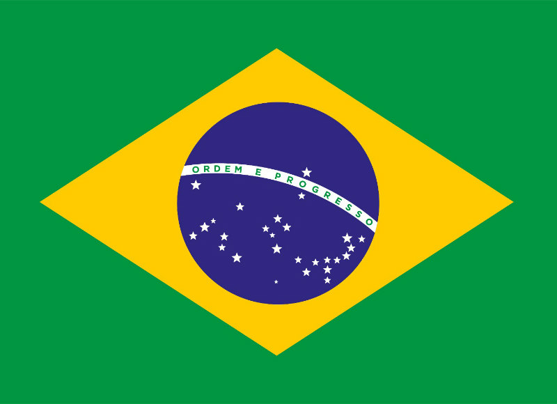

Simbolos Nacionais
República Federativa do Brasil
|
 |

|
A Bandeira do Brasil constitui a bandeira nacional da República Federativa do Brasil. É composta por uma base verde em forma de retângulo, sobreposta por um losango amarelo e um círculo azul, no meio do qual está atravessada uma faixa branca com o lema "Ordem e Progresso", em letras maiúsculas verdes. O Brasil adotou oficialmente este projeto para sua bandeira nacional em 19 de novembro de 1889, substituindo a bandeira do Império do Brasil. O conceito foi criado por Raimundo Teixeira Mendes, com a colaboração de Miguel Lemos, Manuel Pereira Reis e Décio Villares. É um dos símbolos nacionais brasileiros, ao lado do Laço Nacional, do Selo Nacional, do Brasão de Armas e do Hino Nacional. O lema "Ordem e Progresso" é inspirado pelo lema do positivismo de Auguste Comte: O Amor por princípio e a Ordem por base; o Progresso por fim, frase traduzida do francês. [2][3] O campo verde e o losango dourado da bandeira imperial anterior foram preservados — o verde representava a Casa de Bragança de Pedro I, o primeiro imperador do Brasil, enquanto o ouro representava a Casa de Habsburgo de sua esposa, a imperatriz Maria Leopoldina.[4] O círculo azul com 27 estrelas brancas de cinco pontas substituiu o brasão de armas do Império. As estrelas, cuja posição na bandeira refletem o céu visto na capital Rio de Janeiro em 15 de novembro de 1889, representam as unidades federativas — cada estrela representa um estado específico, além do Distrito Federal.
Mais Símbolos Nacionais